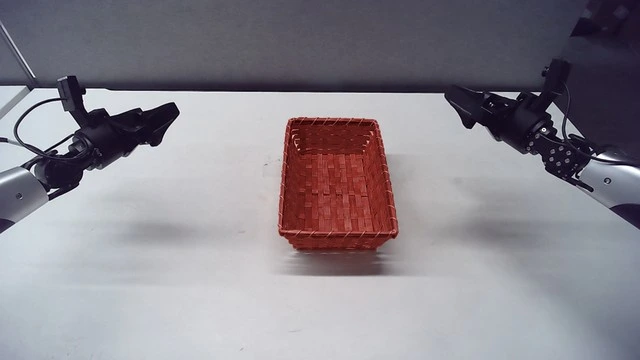
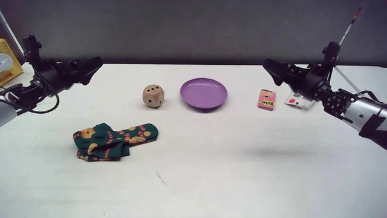
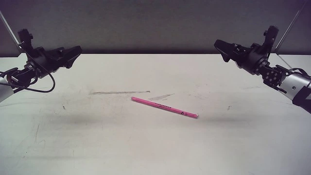
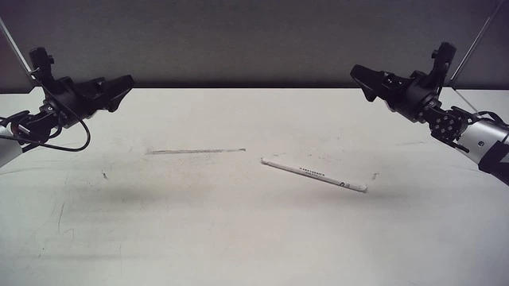
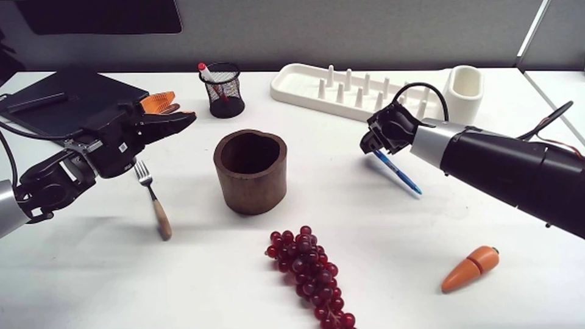
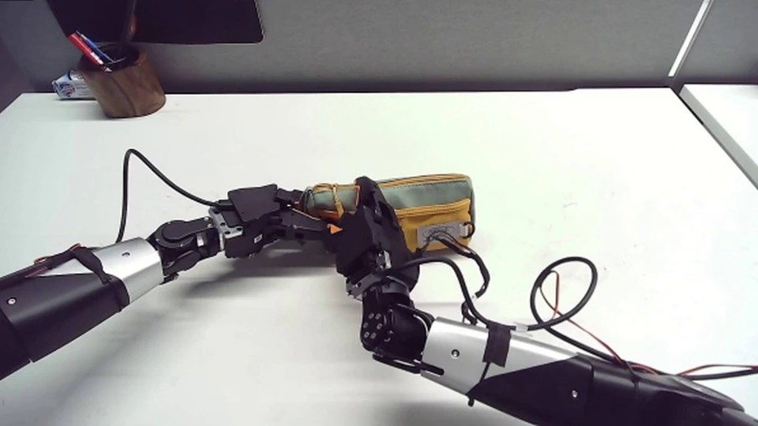
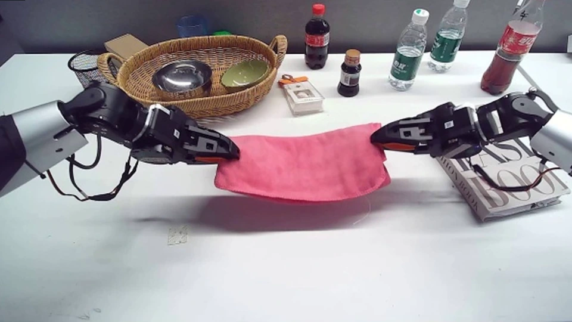
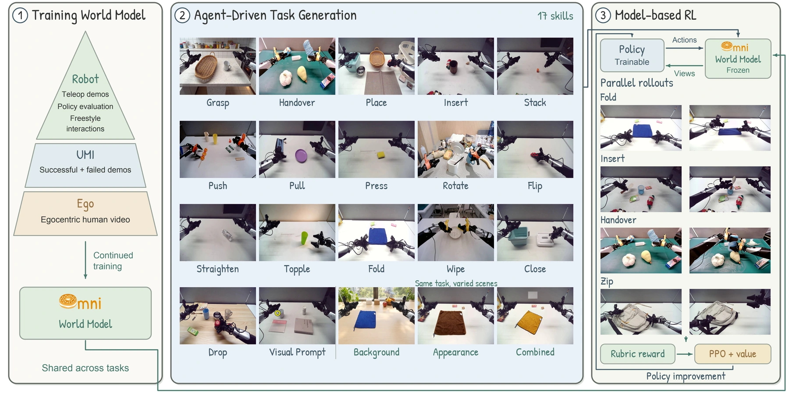

Fold the blue towel
Fold the near half over the far half.
Technical paper
Method
Construct environments, predict how they respond to actions, then use those interactions to train a policy.
From recorded robot demonstrations to a pool of training environments.










The agent selects initial states, writes the policy instructions and success rubrics, and expands each scene into variants. Approved variants enter a shared environment pool.
The model predicts the next observation from the visual history and robot actions.



Recent observations and task context condition the model. End-effector pose increments and gripper states are quantized into action tokens.
The fine-tuned Omni backbone integrates a latent flow to predict one joint camera canvas. The examples below show its head-camera output.
Return the predicted views to the policy. Append the action and prediction to the bounded history, then use the policy’s next action chunk to predict again.
Parallel world-model rollouts supply experience for each policy update.
Initialize the VLA policy from the SFT checkpoint. Each round samples tasks and initial scenes, with a curriculum that prioritizes partially mastered tasks while covering every task.
Collect parallel trajectories with the pre-update policy. Each interaction executes a four-action chunk, feeds the resulting predicted views back to the policy and repeats up to 16 interactions.
An independent VLM judges task completion against the rubric. A separately trained value model estimates expected return from the current observation and instruction.
Combine the sparse outcome rewards and value estimates with generalized advantage estimation. The resulting returns supervise the value model.
Update the policy on executed action tokens using clipped PPO. Train the value model with its own objective and optimizer, then sample the next round.

Enlarge figureScaling results
From 38.02% before RL to 62.23% at the largest scale. Each policy faces the same 242 unseen real-robot tasks, with five trials per task.

Training task count and rollout budget scale together. The 16-, 64-, and 256-task pools use 256, 1,024, and 4,096 rollouts per training round, respectively.
Real-robot evaluation
Five matched instructions, each shown as two independent autonomous trials at their recorded speed. Both sides use the head camera.
Fold the near half over the far half.
Hold the plate with the left gripper and wipe with the right.
Move it to the front-left of the coaster.
Align it with the table edge, prongs toward the bananas.
Turn the printed box over with the right gripper.
Agentic experiment
GPT-Astra chooses a manipulation, the RL-trained policy executes it, and the planner uses the returned observations to continue, retry or revise.

complete trials with GPT-Astra and the RL-trained policy. The same planner with the pre-RL policy completed 0 of 20.
ByteDance Seed · November 2026
@techreport{zhang2026scaling,
title = {Scaling Reinforcement Learning in World Models for Generalist Embodied Agents},
author = {Zhilong Zhang and Yihao Sun and Longfei Li and Hao Luo and
Guanghao Li and Heyuan Yao and Yucheng Wang and Haiqin Cui and
Juncheng Mu and Chengyu Bai and Youliang Zhang and Chenxiao Zhang and
Junpeng Ma and Yang Yu and Ceyuan Yang and Qian Wang},
institution = {ByteDance Seed},
year = {2026},
month = nov
}